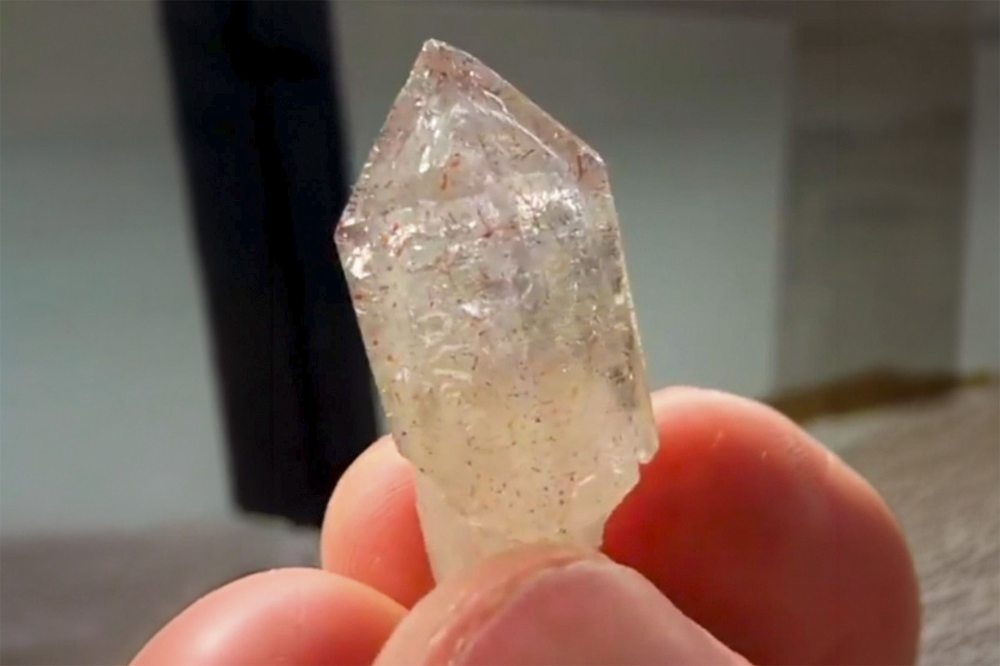

Quartz
"Raspberry Quartz Scepter (light amethystine color)"
VIII-10158
Unassigned
Purchased 4/20/2026 from Bobby Holley Fine Minerals for $103.11
Core Collection • In Collection
Details
Storage Type: Drawer
Storage Location: C2D1 Small Wonders
Size class: Cabinet (0)
Dimensions: Unrecorded
Mass: Unrecorded
Luster: Unrecorded